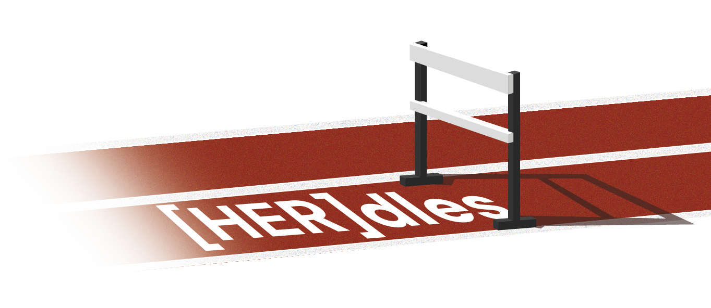
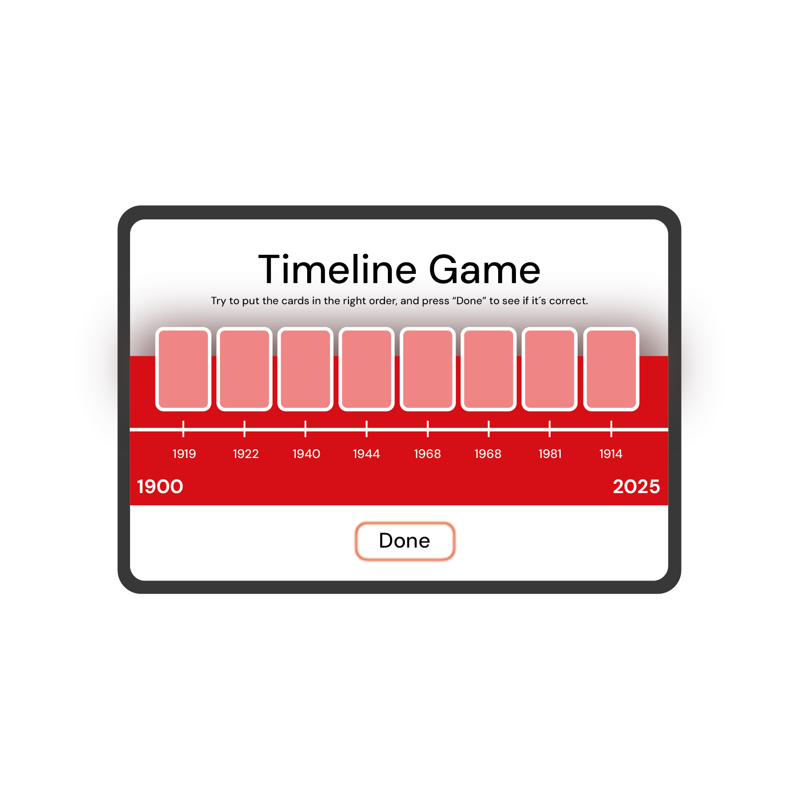
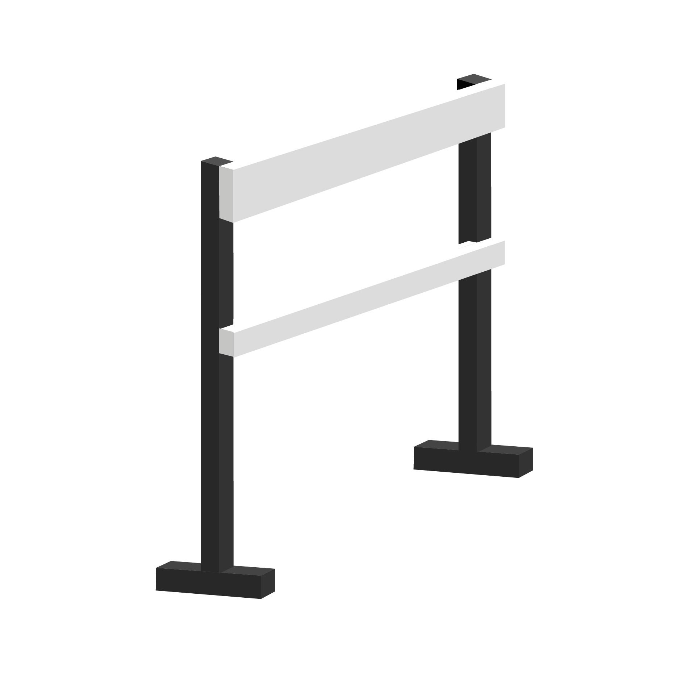
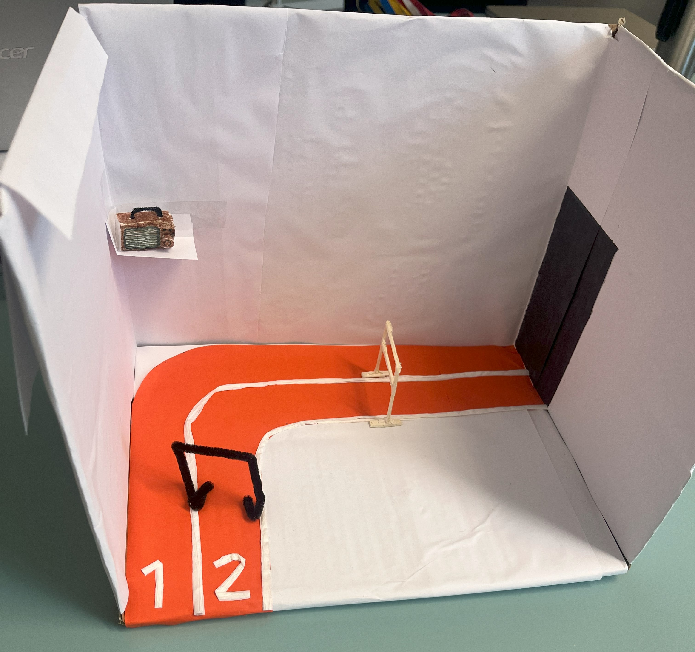
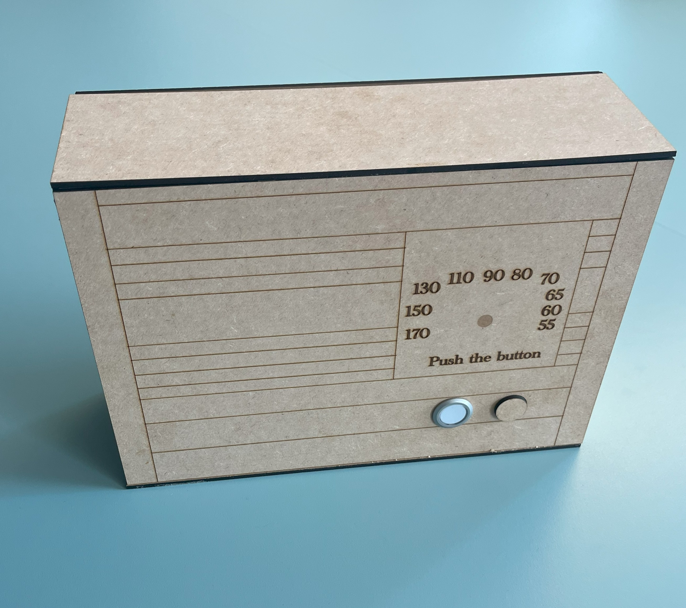
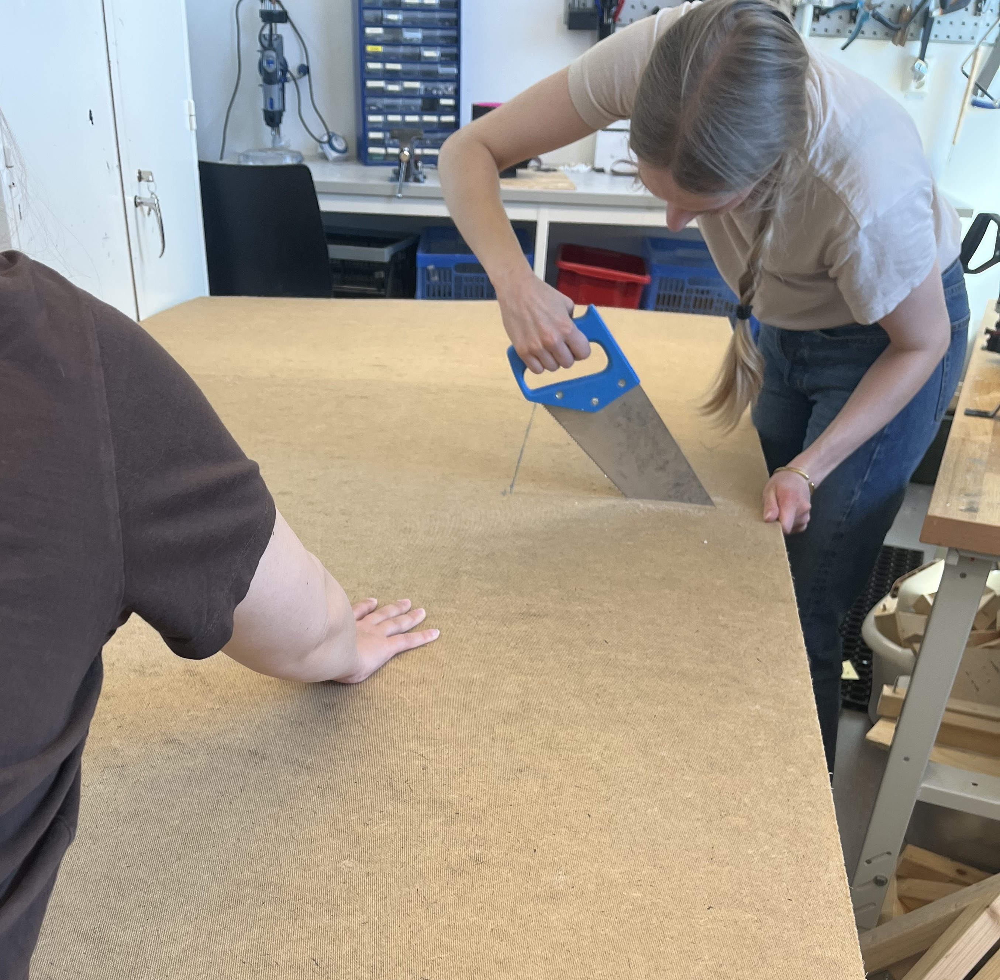
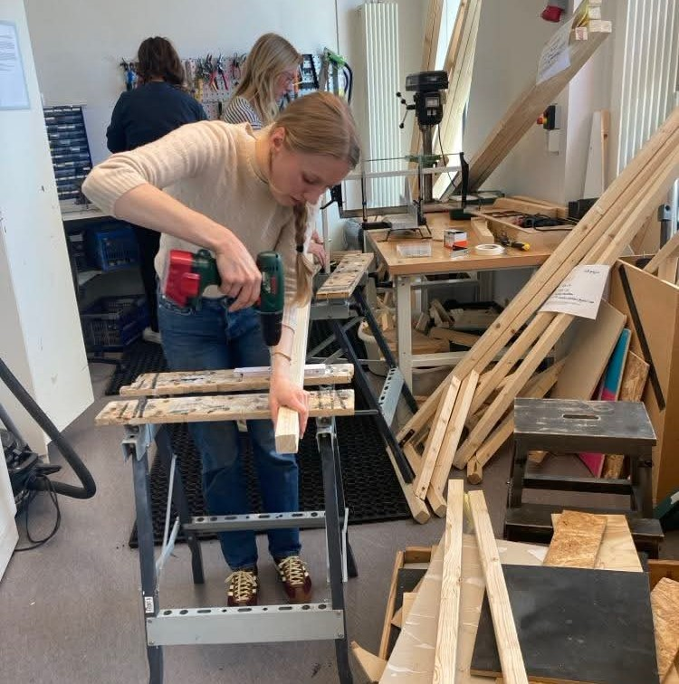
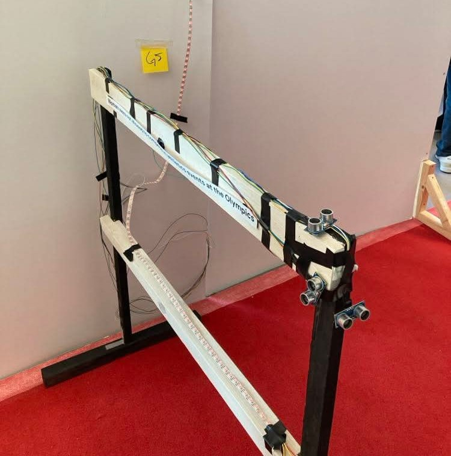

An interactive museum exeprience
Type: Group work
When: 2025
Duration: Ten weeks, half time
Project scope: Creation of an interactive museum experience in collaboration with the Olympic Museum in Lausanne and the Sports Museum of Gothenburg
This project explored how interaction design can make sports history come alive in new and engaging ways. In collaboration with the Olympic Museum in Lausanne and the Sports Museum of Gothenburg, the team created an interactive exhibition that combined physical and digital elements to tell the story of women’s struggle for equality in sports. Through an iterative process, we moved from sketches and small mock-ups to a full-scale installation, which was later exhibited at the IXD show in Gothenburg. The goal was to show how technology and storytelling can turn traditional museum experiences into more inclusive, immersive and meaningful encounters.

The concept
The concept is an interactive exhibition experience that highlights the historical struggle of women in sports, focusing initially on key events during the 1920s in Sweden. Through a combination of physical interaction, sound and visual storytelling, visitors explore the barriers (hurdles) women faced and overcame in their fight for equal access to sports and physical activity.
Game
Test your knowledge of women’s sports history in this timeline game. Match key events in women’s sports and society with the correct year, from 1900 to today.
Hurdle
The hurdle represents the exclusion of women from Olympic athletics. As you approach, light and video clips from the 1926 Women’s Olympics in Gothenburg are triggered, held in response to that exclusion.
Radio

This vintage-style radio plays ambient sounds. When you press the button, it switches to a radio clip discussing the 1926 Women’s Olympics in Gothenburg.
Prototyping
The prototyping process evolved from small-scale mock-ups to a full exhibition-ready installation. We began with low-fidelity prototypes made of cardboard and paper to explore spatial layout, materials and interaction flow. As the concept developed, we built high-fidelity components, including the radio, hurdle and timeline wall, by using laser cutting, woodworking, soldering and Arduino-based electronics. Several parts were tested with users using a Wizard of Oz approach to simulate unfinished interactions and gather early feedback. The final prototype was assembled and exhibited as a life-sized interactive installation, designed to be robust and visually coherent enough for a museum setting.







The result
The project resulted in the concept called [HER]dles, an interactive steeplechase that combines physical design and digital interaction. Visitors encounter a red mat with track markings, a hurdle, a timeline wall, a screen and a custom-built radio. Ultrasonic sensors on the hurdle trigger an LED strip guiding attention to a screen, which first displays myths discouraging women from sports and then footage from the 1926 Women’s Olympics in Gothenburg. All interactions are powered by Arduino. The radio, built in a laser-cut wooden box, plays 1920s ambient sounds and switches to a historical clip about the 1926 Olympics when pressed. At the exhibition’s start, a game inspired by “När då då?” invites visitors to match key moments from women’s history to the correct year, highlighting the challenges they have faced in both sports and society.

A poster
A poster was created to visually communicate the [HER]dles concept and its key features during the exhibition. It provided an overview of the installation, its purpose and how the interactive elements, the game, hurdle and radio work together.